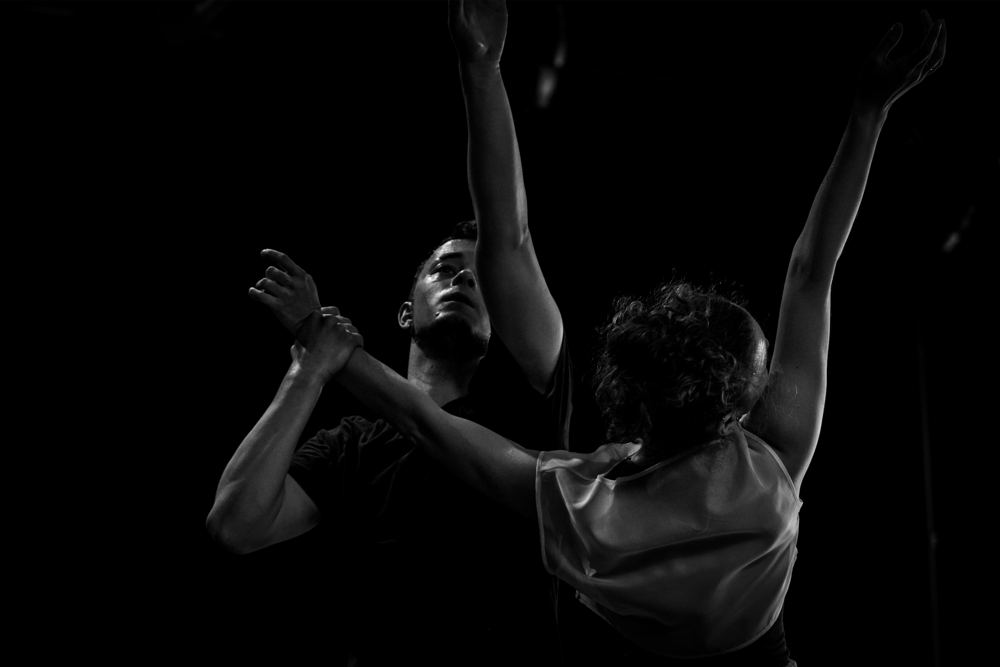
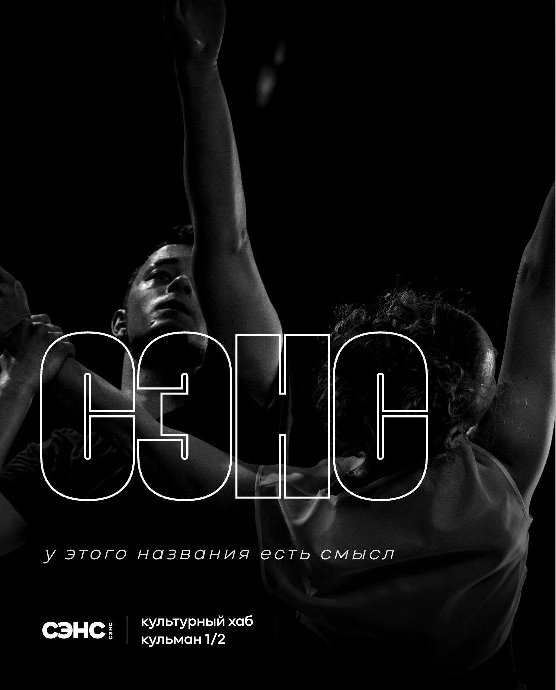

Дом
Место для встреч
СЭНС открыт для зрителей, артистов, авторов и гостей пространства.

СЭНС · Кульман, 1/2
Место встречи зрителей, артистов и авторов новых проектов. Приходите на события, знакомьтесь с пространством и предлагайте идеи для совместной работы.
02 · Что такое СЭНС
СЭНС открыт для зрителей, артистов, авторов и гостей пространства.
Здесь проходят спектакли, показы, разговоры, занятия и другие события.
Пространство для репетиций, исследований, проб и совместной работы.
03 · Пространство
Трансформируемое пространство для событий, показов, встреч, занятий, съёмок и репетиций.
Посмотреть пространство →



04 · Труппа
Официальная театральная труппа культурного хаба СЭНС.

Артистка

Артистка

Артист

Артист

Артистка

Артист · балетмейстер

Художественный руководитель

Артистка

Артист
05 · Аренда и сотрудничество
Готовый формат
Для события, съёмки, репетиции, показа или регулярных занятий.
Узнать об аренде →Идея или проект
Расскажите о своей идее — обсудим возможный формат работы.
Предложить проект →Кульман 1/2 · Минск